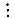
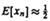
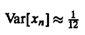
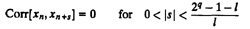

| Previous | Table of Contents | Next |
Here, s is a constant greater than or equal to l and is relatively prime to 2q-1. The first restriction, s ≥ l, ensures that xn and xj for n ≠ j have no bits in common. The second restriction of relative primeness guarantees a full period 2q - 1 for xn. The following example illustrates this procedure for constructing l-bit words.
x0 = 0.111111102 = 0.9921910
x1 = 0.000111012 = 0.1132810
x2 = 0.111001012 = 0.8945310
x3 = 0.100100102 = 0.2968810
x4 = 0.000001002 = 0.3632810
x5 = 0.010011002 = 0.4218810

Tausworthe showed that the l-bit numbers generated using Equation (26.10) had the following property:



Using k = 1 and l = 1 in the last property, it follows that the complete period of the bit sequence contains 2q-1 ones and 2q-1 - 1 zeros. Also, if a window of length q slides along the sequence, each of the 2q - 1 nonzero k-tuples appears exactly once in a complete period.
Most of the polynomials used for generating Tausworthe sequences are trinomials, that is, they have just three nonzero terms. In this case, generation of each new bit requires just one exclusive-or operation. For example, if only cr and c0 are 1 and all other ci’ are zero, then
| bn = bn-q+r ⊕ bn-q | (26.11) |
This makes the computation of bits bi fast. However, to get random numbers, we still need to generate several bits. One way to simple random-number generation is to choose r and q such that 2r ≤ q. In this case, one can generate successive q-bits by using the following shift and an exclusive-or sequence. The individual bits in a word are read from the right. For example, the seed word would be bq-1bq-2...b0.
The following example illustrates the procedure.
x7 + x3 + 1
If q is equal to the number of bits in the computer word (not counting the sign bit), the generation of q-bit words using the word-wide shift and exclusive-or instructions is straightforward. For a large q, the shifting procedure can be implemented in hardware. A list of primitive trinomials of degree 31 or less is given in Table 26.1.
A disadvantage of Tausworthe generators is the observation by Tootill et al. (1971) that while the sequence may produce good test results over the complete cycle, it may not have satisfactory local behavior. In particular, it performed negatively on the runs up and down test. Although the first-order serial correlation is almost zero, it is suspected that some primitive polynomials may give poor high-order correlations. Later, in Section 27.5, it is shown that not all primitive polynomials are equally good.
To construct l-bit random numbers xn from the binary sequence bn, Lewis and Payne (1973) proposed a slightly different method than that proposed by Tausworthe. In this method, called the Generalized Feedback Shift Register (GFSR), an l-bit sequence xn is generated from the binary sequence as follows:
xn = 0.bnbn+sbn+2s...bn+(l-1)s
Here, s is a “carefully selected delay.” The key advantage of their idea is that the sequence xn can be generated very efficiently using word-wide shift and exclusive-or instructions. However, it requires that an array of numbers be stored and that careful initialization of this array take place.
| TABLE 26.1 List of Primitive Trinomialsa | |||||||||||||||||||||||||||||||
|---|---|---|---|---|---|---|---|---|---|---|---|---|---|---|---|---|---|---|---|---|---|---|---|---|---|---|---|---|---|---|---|
| x2 + x + 1 | x3 + x + 1 | x4 + x + 1 | x5 + x2 + 1 | ||||||||||||||||||||||||||||
| x6 + x + 1 | x7 + x + 1
| x7 + x3 + 1
| x9 + x4 + 1
| x10 + x3 + 1
| x11 + x2 + 1
| x15 + x + 1
| x15 + x1
| x15 + x7 + 1
| x177 + x3 + 1
| x17 + x5 + 1
| x17 + x6 + 1
| x18 + x7 + 1
| x20 + x3 + 1
| x21 + x2 + 1
| x22 + x + 1
| x23 + x5 + 1
| x23 + x9 + 1
| x25 + x3 + 1
| x25 + x7 + 1
| x28 + x3 + 1
| x28 + x9 + 1
| x28 + x13 + 1
| x29 + x2 + 1
| x31 + x3 + 1
| x31 + x6 + 1
| x31 + x7 + 1
| x31 + x13 +1
| | ||||
aIf xq + xr + 1 is listed, then xq + xq-r +1 is also primitive.
| Previous | Table of Contents | Next |